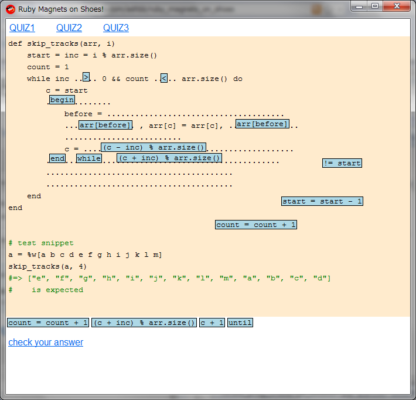

Ruby the Red Gem of Programming
This is an archived post This is an archived post
Previous
Index
Ruby Magnets on Shoes for celebrating WhyDay!
August 18 2010, 8:03 AM
by ashbb

Now, Thursday, August 19, 2010 0:00 hrs Japan Time.
Let's celebrate
WhyDay
!
This is my
tiny project
for celebrating WhyDay. :)
Online demo is
here
.
Have fun with Shoes,
ashbb
Tags
gui, ruby, shoes, whyday
551 views and 0 responses